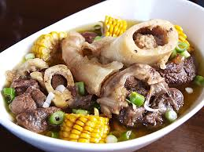

Bulalo Recipe
Back to Home

Description
A comforting beef shank and bone marrow soup with corn, cabbage, and other vegetables.
Ingredients
- 2 lbs beef shank with bone marrow
- 1 corn cob, cut into 3 parts
- 1 small cabbage, quartered
- 1 onion, quartered
- 2 potatoes, quartered (optional)
- 2–3 peppercorns
- Fish sauce or salt to taste
- Water
Cooking Steps
- Boil beef – In a pot, boil beef shank with onions and peppercorns for 1.5–2 hours until tender. Skim off scum.
- Add corn – Once meat is tender, add corn and potatoes (if using). Simmer 10 mins.
- Add cabbage – Toss in cabbage and cook for 3–5 minutes.
- Season – Adjust taste with fish sauce or salt. Serve hot with bone marrow!